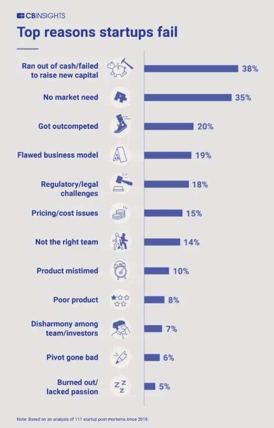

“Fast-growing startups are often building the plane while flying it, but the most successful ones are those that are genuinely focused on delivering value to all of their key stakeholders. Too often, we’ve seen founders consumed by the wrong things — ones that might be rewarding in the near-term, but are insignificant and potentially detrimental for long-term sustainable success. We’ve all seen it and we know how those stories end.” Forbes, Apr 2021
Startups operate in conditions of high uncertainty, high risk and are normally under intense pressure to move at speed. There’s quite a variety of scaling challenges to successfully manage:
Product Development
Marketing and Sales. Demonstrating traction
Team Growth
Acquisitions or Partnerships
Scaling Operations
Managing Financials and Fund-raising
Meeting Legal and Compliance requirements
And there’s more. Two new targets to aim for:
1.Sustainability.
As the founder, your goal must be to lay a strong foundation for building robust ESG processes. Just as you ruthlessly prioritize all potential features and solutions during product development, you must prioritize high value, low complexity ESGissues in your sector as well. No VC firm will penalize your company for not having figured out everything when it comes to ESG. However, the market, i.e., your customers may penalize you as the startup matures and the reputational risk increases. For instance, over 50% of Gen Z and millennial consumers would boycott a company for not being ecoconscious.
ESG is coming to venture capital. Here’s how startup founders can stay ahead of the curve | World Economic Forum (Jan 2022)
2. Profitability.
“The rapid tightening of financial conditions after years of relative stability and cheap funding is leading to a sense of concern in the fintech industry…Fintech firms now operate in a more competitive environment than before, and the fight for both cost-conscious clients and increasingly wary investors will intensify.”
How fintech can adapt to a tougher environment | Financial Times (May 2023)
As a startup increases in size, stakeholders and their interests are changing. So, ensuring everyone (customers, new hires, partners, investors…) is aligned around the mission, building the right culture, managing well for profit and sustainability at speed without breaking things is quite a challenge.
Under intense pressure, it’s easy to make serious or even catastrophic mistakes…
Solution
Control Panel
Individual Accountability
Risk Management
Decision making
Transparency
Stakeholder Management
Sustainability
Ethical Behaviour
Create the right culture from the start — absolutely critical for startups. People and teams need to focus on the right things in the right way. Very difficult to change the “wrong” culture and address “bad behaviour” later, so get it right from the start.
Establish the right checks and balances. Tuned for each fintech’s evolving and specific situation. Not too heavy or bureaucratic that acts as a brake or drag on progress. Not too light weight / low touch that allows ill-informed decisions, inappropriate actions and unnecessary risk taking
Startups have to continuously decide how to effectively prioritize resources and balance short-term/tactical and long-term/strategic efforts.
Move fast. Be in control. Don’t break things.
Contact us for more details
Solution Benefits
Scale your culture
Ensure prioritisation and focus
Balance and address stakeholders’ interests
Balance commercial, innovation and ethical drivers
Provide transparency over financials & traction
Address legal and compliance requirements
Know when to adapt/pivot. Embed learning
Assure value creation. Reduce risk from value destruction
Improve speed and quality of financing
An essential building block for sustainable value creation
Appendix
Top reasons startups fail

Two examples:
Rose coloured glasses?
Unbridled passion and unbounded enthusiasm are the hallmarks of any great founder. Unfortunately, however, it is all too easy for a founder to confuse his or her desire to will a good outcome with the reality that will inevitably out-will any founder.In this particular instance, the founders simply did not want to believe that despite some successes, the business simply may not have been on a trajectory to attract additional capital. Moreover, they were reluctant to scale back their expenditures to create a longer pathway to the milestones that may have attracted additional capital.
https://techcrunch.com/2015/09/16/a-case-study-of-startup-failure
2. FTX — say no more:
“Never in my career have I seen such a complete failure of corporate controls and such a complete absence of trustworthy financial information as occurred here,” John Ray III — an American bankruptcy specialist who previously oversaw the collapse of Enron
References
Introduction
https://www.frc.org.uk/directors/corporate-governance/uk-corporate-governance-code
https://www.ycombinator.com/library/3w-how-to-create-and-manage-a-board
https://hbr.org/podcast/2022/12/why-some-start-ups-fail-to-scale
https://www.theguardian.com/technology/2022/nov/18/how-did-crypto-firm-ftx-collapse
https://www.cbinsights.com/research/biggest-startup-failures/#1525
https://hbr.org/2021/05/why-start-ups-fail
The 13 Biggest Challenges Scaleups Will Face in 2022
The challenges of scaling a startup culture
The Biggest Challenges Startups Face in Their First Year
How fintech can adapt to a tougher environment | Financial Times
The 3 Deadliest Challenges of Scaling a Startup
The Scale-Up Challenge for Startups
What start-ups need to scale and succeed
How to Scale a Startup Successfully: Best Strategies, Pro Tips and Our Experience
7 Ways to Scale Your Startup or Business
From startup to scale-up: five ideas for growing businesses
Will Your Startup Ever Scale Up? Here’s What You Need To Know
How to Scale a Startup: 7 Strategies that Lead to Sustainable Growth
Why governance must be a priority for start-ups
Corporate Governance for Startups & Scaleups
Start-ups and a new age for governance
Why Startups Are Increasingly Prioritising Corporate Governance As Their Business Scale
Corporate Governance and it’s Importance in Start-Ups
Governance in Startups and Early Stage Companies
Why governance must be a priority for start ups
Startup Governance: An Essential Building Block for Sustainable Success
https://corpgov.law.harvard.edu/2020/01/14/startup-governance/
Guidelines on Corporate Governance Principles for Banks
Financial service compliance without the complexity
Fintech Law and Regulations United Kingdom 2022–23 (hot off the press)
First-step analysis: fintech regulation in the United Kingdom